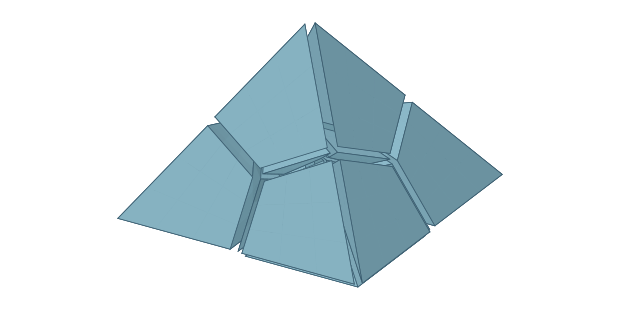
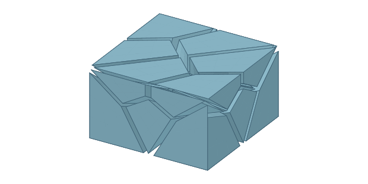
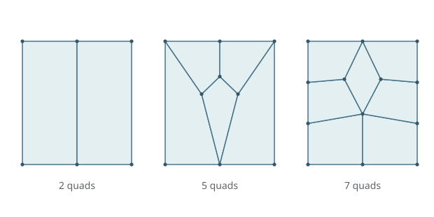
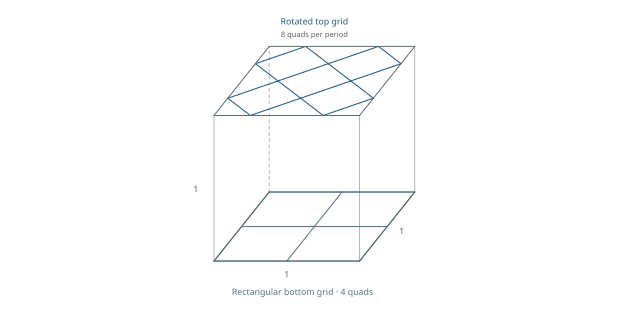
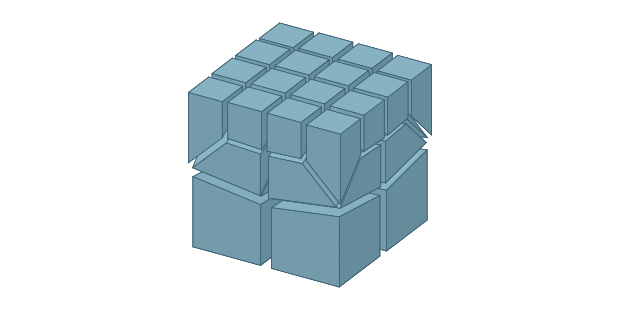

Mesh collections
Hex meshing templates through symmetry-constrained exhaustive search
Symmetry constraints make exhaustive connectivity searches tractable within prescribed boundaries and cell-count limits. Explore the resulting templates, optimized geometry, and certified mesh downloads.

Schneiders’ pyramid
Hexahedral fillings of the prescribed pyramid boundary, with interactive geometry and quality measurements.

Mitchell’s Geode
A hexahedral transition between a quadrilateral grid and a quadrangulated tetrahedral-mesh boundary.

Geode side walls
Quadrilateral boundary patterns for assembling Geode cells with matching sides.

Periodic grid rotation
Transitions between rectangular and rotated quad grids, grouped by periodic connectivity.

Refinement templates
9-to-1 and 16-to-4 quad-grid transitions, with certified hex meshes and enumerated side walls.
How the meshes are checked
Read about connectivity search, quality measurements, and exact geometric validation.